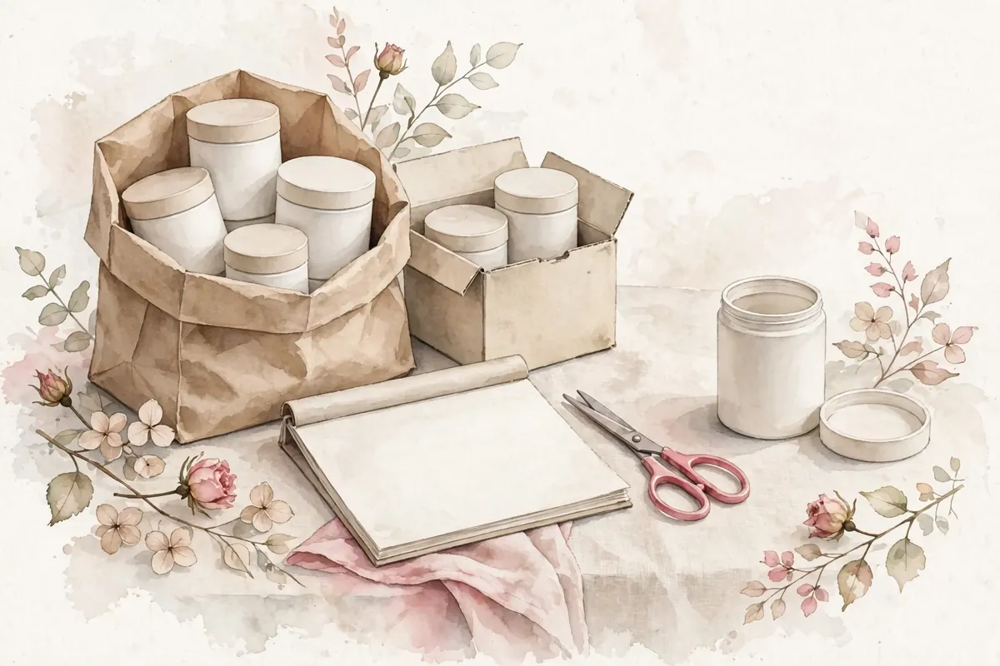

トップ ＞ インナーケア・サプリ ＞ 余った・期限切れサプリの処分の考え方
余った・期限切れサプリの処分の考え方

棚の奥から、期限の切れたサプリメントが出てくる。そんな経験は、多くの方にあると思います。もったいない気持ちはありますが、食品には期限の意味があります。この記事では、処分の考え方と、次に余らせないための工夫を整理します。
まず、期限と量を確認する
賞味期限の表示は、容器の底や裏面、箱の側面などに書かれています。開封したものは、未開封より早めに使い切るのが基本です。処分を決める前に、棚にある分を全部出して、期限の近い順に並べてみると、全体の量が見えます。
期限内のものでも、変色や匂いの変化など、状態がおかしいと感じたものは、無理に使わない判断をします。
処分は、自治体の分別ルールに沿って
捨て方は、お住まいの自治体の分別ルールを確認します。内容物（粒や粉末）と、容器（プラスチック、ガラス瓶、缶、紙箱）で、区分が分かれるのが普通です。ルールは自治体の広報や公式サイトで確認でき、「サプリメント」「健康食品」といった品目名で案内されている場合もあります。
容器に個人情報の書かれたラベル（定期購入の宛名など）が貼ってある場合は、剥がすか、塗りつぶしてから捨てる配慮もしておきます。
譲らない・混ぜない、が基本
期限内の余りでも、人に譲ることはおすすめしません。開封後の保管状態は、渡す側にも受け取る側にも確かめようがないからです。また、種類の違うものを同じ容器に混ぜて保管することも、後で区別がつかなくなるため避けます。
余らせない工夫は、買い方にあります。定期購入は間隔の変更ができるかを確認しておく、初めてのものは小さい単位から始める。処分の経験は、次の買い方の判断材料になります。
余りが出やすいパターンも知っておくと、次の買い方に活かせます。複数の定期購入が重なって届く時期がずれる、買い置きがあるのに新しいものを開けてしまう、といった重なりが典型です。棚卸しを季節の区切りで行い、開封済みのものを手前に並べ替えるだけでも、余りは減っていきます。定期購入は、間隔の変更や一時停止ができるものが多いので、余りが見えた時点で早めに調整するのが、処分を減らす一番の方法です。処分は「失敗」ではなく、自分の消費のペースを知るための材料として受け止めるのがよいと思います。処分した品目と理由を、買い物のメモに一行残しておくと、次に同じパターンで余らせることを防げます。捨てる作業は、棚の中を一度すべて見渡す機会でもあります。期限の確認と並べ替えを兼ねて行えば、処分と棚卸しが一度で済みます。
セラフィナ「期限切れは自治体のルールで処分。人に譲らない・混ぜないが基本だね」